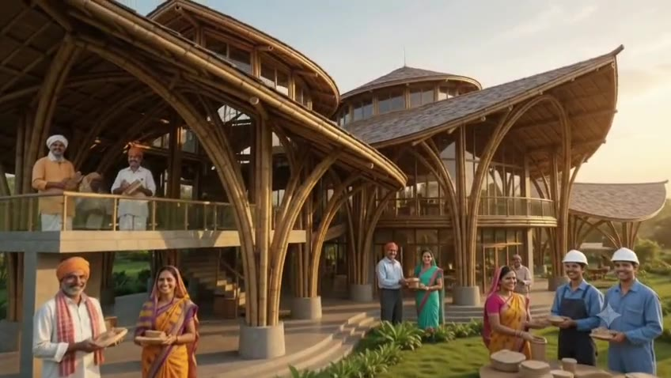

Home / Agriculture & rural development
Agriculture & rural development
The Foundation aims to support farmers and rural communities through sustainable resource development and enterprise opportunities.

Agriculture & bamboo farmer development
The Foundation aims to support farmers and rural communities through sustainable resource development and enterprise opportunities.
Proposed activities
- Bamboo farming promotion
- Nursery development
- Agroforestry
- Sustainable agriculture awareness
- Organic waste utilisation
- Composting education
- Agricultural residue management
- Farmer training
- Farmer Producer Organisation linkages
- Market-oriented agricultural enterprises
Rural entrepreneurship
We aim to encourage local entrepreneurship through:
- Bamboo micro-enterprises
- Waste collection businesses
- Recycling enterprises
- Compost production units
- Biomass businesses
- Bamboo furniture workshops
- Bamboo handicraft enterprises
- Rural manufacturing units
- Women-led businesses
- Youth entrepreneurship
Women & youth empowerment
Our development approach encourages participation from women, youth, tribal communities, traditional artisans and rural entrepreneurs.
Proposed programmes include
- Women-led bamboo enterprises
- SHG-based manufacturing
- Waste management entrepreneurship
- Skill-based employment
- Technical training
- Enterprise development
- Digital marketing education
- Financial literacy and business awareness
From bamboo to industry.From waste to wealth.Building a sustainable future.
Together, we can create a stronger green economy and sustainable industrial future.